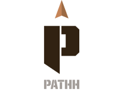

Team Boulder Crest
How do you restructure suffering into strength? How can a person experience unforgettable pain then return to a normal, peaceful life? When carrying the weight of past trauma, is it possible to find new meaning and fulfillment?
These are the challenges central to the mission of Boulder Crest, our client and an organization dedicated to the physical and emotional well-being of America’s warriors.

Boulder Crest is a nonprofit organization that offers retreats for veterans, active duty service members, first responders, and their families. Many of these individuals have been through combat, and many have experienced Post-Traumatic Stress (PTS) or depression. Their unique, holistic methodology is founded on the principle of Post-Traumatic Growth (PTG). PTG is a framework that recognizes the potential to find deeper meaning and personal strength through trauma and struggle, an alternative to treating PTS simply as a disorder.
Visit Their Website

Boulder Crest’s cornerstone training program is Warrior PATHH. Teams of about six students, called a Fire Team, participate in a regimented seven-day intensive retreat led by PATHH Guides, who are typically alumni of the program. Once students return home from the retreat, they participate in an aftercare program where they integrate the lessons they learned from the retreat via a responsive web app, called myPATHH, and regular video calls with their Fire Team. The Warrior PATHH journey takes 18 months total to complete, but the lessons and techniques aim to impart lifelong resilience.
Over the course of an eight-month capstone project, our team of five Masters students was tasked to evaluate myPATHH and the role it plays with regards to Boulder Crest’s services. This partnership between Boulder Crest and Carnegie Mellon’s Human-Computer Interaction Institute intended to bring new perspective and insight to the already impactful PATHH training programs. Selected wording from the initial project brief is included to the right.